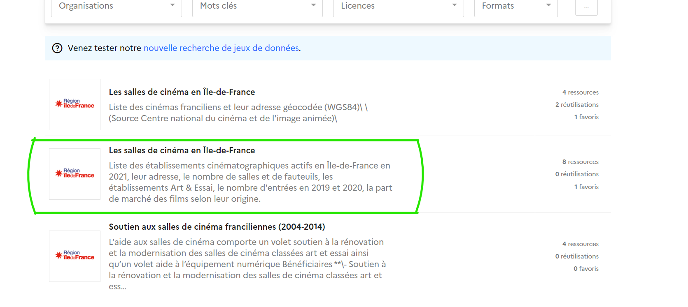

| Contenus | Capacités attendues |
|---|---|
| Données structurées | Identifier les différents descripteurs d’un objet. Distinguer la valeur d’une donnée de son descripteur. |
| Traitement de données structurées | Réaliser des opérations de recherche, filtre, tri ou calcul sur une ou plusieurs tables. |
1. À partir du site data.gouv.fr, télécharger des données ouvertes sur les salles de cinéma
en Île-de-France.

Nommer ce fichier «salles.csv».
2. Indiquer quand a été créé ce fichier (sur la page, il est possible de trouver les métadonnées du fichier).
Commentaires: Avec un tableur, les données sont représentées sous forme tabulaire.